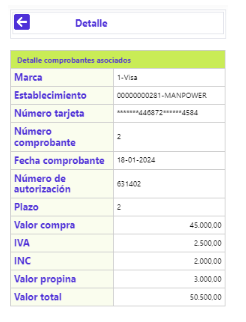
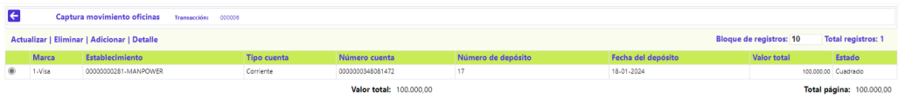
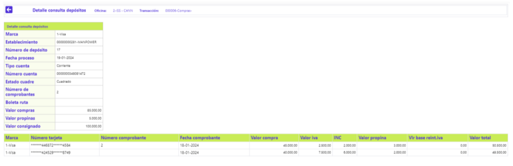

Captura de Movimientos oficina
A través de esta opción, el sistema permite el ingreso manual del movimiento de transacciones de: Pagos, Avances, Impuestos y Compras o consumos realizados por los clientes en los establecimientos. Este formulario dispone de los siguientes enlaces: Compras, Avances, Pagos, Impuestos, Actualizar y Adicionar. Adicionalmente, en la parte superior del formulario, cuenta con un conjunto de cuatro campos que tienen una doble funcionalidad, inicialmente, para definir la información de la Oficina, Número de lote y Marca de la consignación, después de grabar los distintos movimiento, sirven de criterio de un filtro para la búsqueda de lotes de movimiento ingresado, momento en que los enlaces: Compras, Avances, Pagos o Impuestos, ubicados en el bloque inferior, van a permitir invocar otros formularios para ver el detalle de esos lotes. El procedimiento para capturar el movimiento es el siguiente: una vez se despliega el formulario, se debe ingresar: el código de la oficina o sucursal de la que se va a capturar movimiento, el Número lote, y la Marca, la Fecha de proceso se muestra por defecto y no es modificable. A continuación, se activa el enlace Adicionar.

Adicionar (- Compras): Al activar ese enlace se despliega el siguiente formulario:

Descripción de Campos – Lote (Consignación)
Fecha proceso |
Campo de salida o no ingresable, que contiene la fecha del sistema para la cual se ingresa movimiento. |
Oficina |
Campo obligatorio en el que se digita el código de la oficina para la cual se va a capturar o supervisar (dependiendo de la opción dentro de menú) el movimiento. Estos códigos corresponden a los definidos en la tabla Estructura orgánica del Núcleo. Una vez ingresado el código, se ejecuta la consulta, para proseguir con la captura. |
Marca |
Campo que posee lista de valores poblada mediante la opción Franquicias del Núcleo. Si la entidad requiere generar contabilidad por marca o franquicia, no debe mezclar dentro del mismo lote o tapa movimiento de diferentes franquicias. |
Número lote |
Campo numérico de 3 dígitos, obligatorio, corresponde al grupo o porción de movimiento a capturar, dato ingresado en el formulario inicial o anterior. En este formulario se hereda o muestra dicho valor. |
Nota contable |
Campo numérico de 3 dígitos, no obligatorio, corresponde a la porción de movimiento a capturar agrupado o totalizado por montos. |
Transacción |
Campo obligatorio que posee lista de valores tipo combo, de la que debe seleccionarse entre: Compras, Avances, Pagos o Impuestos, el tipo o clase de movimiento a ingresar. |
Moneda |
Campo obligatorio en el que se puede ingresar o seleccionar de la lista de valores poblada en la opción Moneda el código que aplica para el movimiento a ingresar. |
Cantidad |
Campo obligatorio, numérico que en máximo dos dígitos, debe contener el número de comprobantes de avances que se van a ingresar. |
Valor |
Campo numérico con capacidad para una suma hasta de 16 dígitos incluidos dos decimales, contiene el monto o cuantía de las operaciones efectuadas por transacción. |
Al activar el botón especial Siguiente, el sistema realiza algunas validaciones, si existe alguna inconsistencia le notifica al usuario, en caso contrario, despliega el siguiente wizard de dos pasos, se ilustra el primero, Depósito.

Descripción de Campos - Depósito
Fecha proceso |
Campo de salida o no ingresable, que contiene la fecha del sistema para la cual se ingresa movimiento. |
Oficina |
Campo de salida o no ingresable, muestra el código junto con el nombre de la oficina para la que se ingresa el movimiento.. |
Marca |
Campo de salida o no ingresable, muestra el código junto con el nombre de la marca de las tarjetas, asociadas al movimiento que se va a capturar o supervisar (dependiendo de la opción dentro de menú). |
Establecimiento |
Campo obligatorio en el que se puede ingresar o seleccionar de la lista de valores poblada en la opción Información de establecimientos el código del comercio en cuya cuenta se debe depositar el valor neto del movimiento a ingresar. |
Tipo cuenta |
El sistema diligencia ese dato ilustrando si la cuenta del establecimiento corresponde a: Corriente o Ahorros. |
Número cuenta |
El sistema diligencia ese dato ilustrando dicho número de la cuenta de depósitos asociada al establecimiento. |
Número consignación |
Campo numérico de 7 dígitos, no obligatorio, corresponde al número que identifica cada consignación. |
Fecha consignación |
Campo que mediante la funcionalidad de un calendario permite ingresar la fecha en formato DD-MM-YYYY. El sistema confronta este dato con el plazo fijado para la Marca en la opción Información de establecimientos y, en caso de no encontrar allí ese dato, lo tomará de los Parámetros operativos. |
Número comprobantes |
Campo obligatorio, numérico de 5 dígitos, en el que se debe ingresar la cantidad de comprobantes que componen o integran cada consignación. |
Transacción |
Campo que ilustra el código y nombre de la transacción original, acorde con la transacción seleccionada en el formulario inicial. |
Total compras |
Campo numérico con capacidad para una suma hasta de 16 dígitos incluidos dos decimales, no obligatorio, que contiene el monto de los consumos efectuados en el establecimiento que consigna, no incluye los valores correspondientes a propinas, comisiones (descuento) e IVA. |
IVA |
Campo numérico con capacidad para una suma hasta de 16 dígitos incluidos dos decimales, no obligatorio, que permite el ingreso del valor reportado por el establecimiento por dicho concepto. |
INC |
Campo numérico con capacidad para una suma hasta de 16 dígitos incluidos dos decimales, no obligatorio, que permite el ingreso del valor reportado por el establecimiento por dicho concepto. |
Total propinas |
Campo numérico con capacidad para una suma hasta de 16 dígitos incluidos dos decimales, no obligatorio, que contiene el monto total de las propinas otorgadas por los tarjetahabientes y reflejadas en los comprobantes de cada consignación. |
Total |
Campo numérico con capacidad para una suma hasta de 16 dígitos incluidos dos decimales, no obligatorio, que contiene el monto total bruto o neto de los consumos efectuados, dependiendo del valor del parámetro Captura, requiere ingreso descuento definido en la opción Parámetros operativos, esto es, consumos más propinas, más IVA o consumos más propinas menos descuentos, más IVA por cada consignación. |

Descripción de Campos - Comprobantes
Número tarjeta |
Campo alfanumérico de 23 dígitos, no obligatorio, en el que se digita el número de la tarjeta mediante la cual se realiza el consumo o utilización, el sistema valida el bin de la misma y asigna los ceros a la izquierda hasta completar la longitud total del campo. |
Número comprobante |
Campo numérico de 7 dígitos, no obligatorio, en el que se registra el número del voucher o comprobante correspondiente al consumo. |
Fecha comprobante |
Campo tipo fecha, en formato DD-MM-AAAA, debe contener la fecha física de cada uno de los comprobantes, es la base para determinar la antigüedad de los mismos y verificar que no excedan el plazo máximo para su consignación. |
Marca |
Campo de salida o no ingresable, muestra el código junto con el nombre de la marca de las tarjetas, asociadas al movimiento que se va a capturar o supervisar (dependiendo de la opción dentro de menú). |
Establecimiento |
Campo de salida o no ingresable, muestra el código junto con el nombre del comercio en cuya cuenta se debe depositar el valor neto del movimiento a ingresar. |
Número de autorización |
Campo alfanumérico de 6 dígitos, no obligatorio, en el que se registra el número de autorización de la transacción asignado por el sistema o por la franquicia |
Plazo |
Campo numérico de 2 dígitos, no obligatorio, en el que se relaciona la cantidad de periodos solicitados por el tarjetahabiente en el voucher para cancelar su consumo o utilización. En caso de no digitarse el sistema tomará los valores señalados por defecto en los parámetros de Transacciones por empresa. |
Valor compra |
Campo numérico con capacidad para una suma hasta de 16 dígitos incluidos 2 decimales, obligatorio, que contiene el monto bruto por cada consumo efectuado. |
IVA |
Campo numérico con capacidad para una suma hasta de 16 dígitos incluidos dos decimales, no obligatorio, que permite el ingreso del valor reportado por el establecimiento por dicho concepto. |
INC |
Campo numérico con capacidad para una suma hasta de 16 dígitos incluidos dos decimales, no obligatorio, que permite el ingreso del valor reportado por el establecimiento por dicho concepto. |
Valor propina |
Campo numérico con capacidad para una suma hasta de 16 dígitos incluidos 2 decimales, no obligatorio, que contiene el monto de la propina concedida por el tarjetahabiente. |
Valor total |
Campo numérico con capacidad para una suma hasta de 16 dígitos incluidos 2 decimales, no obligatorio, que contiene la sumatoria del monto del consumo más el valor IVA, más la propina, por cada consignación. |
Luego de capturados los datos de cada comprobante y activar el botón especial ubicado en la parte inferior derecha, se muestra el siguiente formulario, en el que se puede observar, además de la relación de los distintos comprobantes que componen el lote (consignación), en resumen, si las cifras del movimiento presentan o no diferencias, el cual dispone de los enlaces: Actualizar, Eliminar, Adicionar y Detalle:

Adicionar (- Comprobantes): Al activar ese enlace se muestra el mismo formulario, cuya funcionalidad se ya se describió más arriba como Comprobantes y lo que permite es agregar la información de otro comprobante que, perteneciendo a la misma consignación, aún no había sido ingresado.
Actualizar (- Comprobantes): Al activar ese enlace, se despliega un formulario en el que los únicos campos no modificables son: Marca y Establecimiento

Detalle (- Comprobantes): Si el usuario invoca ese enlace se muestra el siguiente formulario:

Al no evidenciarse descuadre en las cifras del lote de la consignación y sus comprobantes, al activar el botón especial ubicado en la parte inferior derecha, se muestra el siguiente formulario, el cual dispone de los enlaces: Actualizar, Eliminar, Adicionar y Detalle:

Adicionar (- Captura movimiento oficinas): Al activar ese enlace se muestra el mismo formulario, cuya funcionalidad se ya se describió más arriba como Lote (Consignación) y lo que permite es agregar la información de un nuevo grupo de comprobantes que, aún no había sido ingresado.
Actualizar (- Captura movimiento oficinas): Al activar ese enlace se muestra el mismo formulario, cuya funcionalidad se ya se describió más arriba como Lote (Consignación) y lo que permite es modificar datos de la misma o de los comprobantes que la integran.
Detalle (- Captura movimiento oficinas): Al activar ese enlace se muestra el siguiente formulario, que permite la consulta de los movimientos, en el evento en que por efecto de errores en la captura o malas liquidaciones del movimiento, éste queda descuadrado, dado que se requiere de una autorización para ser procesado en la operación diaria:
